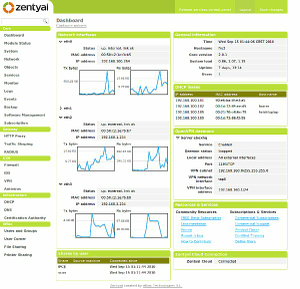
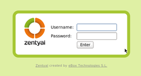
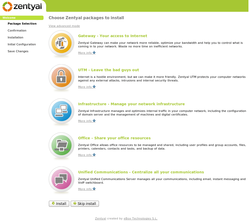

Zentyal2
Archivierte Anleitung
Dieser Artikel wurde archiviert, da er - oder Teile daraus - nur noch unter einer älteren Ubuntu-Version nutzbar ist. Diese Anleitung wird vom Wiki-Team weder auf Richtigkeit überprüft noch anderweitig gepflegt. Zusätzlich wurde der Artikel für weitere Änderungen gesperrt.
Anmerkung: Dieser Artikel beschreibt die ältere Version 2.0. Für die neuere Version 3.0 bitte den Artikel Zentyal zu Rate ziehen.
Artikel für fortgeschrittene Anwender
Dieser Artikel erfordert mehr Erfahrung im Umgang mit Linux und ist daher nur für fortgeschrittene Benutzer gedacht.
Zum Verständnis dieses Artikels sind folgende Seiten hilfreich:
 Zentyal
Zentyal  (vor Version 2.0 als "eBox Platform" bezeichnet) ist eine in Spanien entwickelte grafische Oberfläche für die Server-Version von Ubuntu 10.04 LTS. Dadurch wird die oft mühsame und zeitraubende manuelle Installation und Konfiguration eines eigenen Servers erheblich vereinfacht. Die spätere Administration des Servers erfolgt komfortabel und verschlüsselt über eine integrierte Weboberfläche. Zu den Zielgruppen zählen nicht nur der Heimbereich (SOHO), sondern auch kleine und mittlere Unternehmen (KMU). Bei Bedarf ist kommerzieller Support durch die Entwicklerfirma verfügbar.
(vor Version 2.0 als "eBox Platform" bezeichnet) ist eine in Spanien entwickelte grafische Oberfläche für die Server-Version von Ubuntu 10.04 LTS. Dadurch wird die oft mühsame und zeitraubende manuelle Installation und Konfiguration eines eigenen Servers erheblich vereinfacht. Die spätere Administration des Servers erfolgt komfortabel und verschlüsselt über eine integrierte Weboberfläche. Zu den Zielgruppen zählen nicht nur der Heimbereich (SOHO), sondern auch kleine und mittlere Unternehmen (KMU). Bei Bedarf ist kommerzieller Support durch die Entwicklerfirma verfügbar.
Server-Funktionen:
Gateway: Firewall, Proxy, VPN, Bandbreitenbeschränkungen etc.
Sicherheit: Firewall, Antivirus, Intrusion Detection etc.
Infrastruktur: Domainkonfiguration, Zertifikatsverwaltung (CA) etc.
Office: Datei-, Druckserver, Freigaben etc.
Unified Communications: Exchange-Ersatz, Asterisk etc.
oder eine beliebige Kombination aus den obigen Möglichkeiten (siehe auch Paketauswahl)
Alle verwendeten Programme stammen unverändert aus den offiziellen Paketquellen, die Weboberfläche und die Vorkonfiguration der diversen Serverdienste dagegen aus eigener Entwicklung. Alternativen für den SOHO-Bereich sind beispielsweise der SME Server, clearOS (ehemals ClarkConnect) oder IPFire.
Im September 2011 wurde eine neue stabile Version 2.2 veröffentlicht, deren Neuerungen in diesem Artikel noch nicht berücksichtigt sind. Die aktuelle Version 3.0 vom September 2012 basiert auf Ubuntu 12.04 LTS und enthält z.B. Samba 4 sowie Funktionen zum Single-Sign-On (SSO).

Voraussetzungen¶
Prinzipiell lässt sich Zentyal auch auf einem als Desktop genutzten PC installieren. Bevorzugt werden sollte aber ein eigener Rechner mit
mind. Pentium IV Prozessor
1 GiB RAM oder mehr
1 (Serverfunktion) oder 2 (für den Betrieb als Gateway) Netzwerkkarten
Zusätzlich sind englische Sprachkenntnisse sehr sinnvoll. Die spätere Verwaltung erfolgt zwar (teilweise) auf Deutsch, aber die Übersetzung der Weboberfläche ist noch nicht abgeschlossen und viele Informationen und Anleitungen zum Betrieb eines Linux-Servers liegen nur in Englisch vor.
Installation¶
Hinweis:
In den offiziellen Paketquellen von Ubuntu sind ältere Pakete unter dem alten Namen ebox-... enthalten. Dieser Artikel beschreibt ausschließlich die Version 2.0, deren Pakete aus einem "Personal Package Archiv" (PPA) stammen.
Die Installation kann prinzipiell auf zwei Wegen erfolgen: entweder via Installations-CD oder man bindet nach der Installation eines minimalen Servers ein "Personal Package Archiv" (PPA) als Paketquelle für Zentyal ein. Auf letzterem Weg kann Zentyal auch unter einer schon bestehenden Server-Installation genutzt werden. Die Entwickler empfehlen, die Installations-CD zu nutzen.
Ob man Zentyal als 32- oder 64-Bit System installiert, hängt vom Prozessor und weniger vom vorhandenen Arbeitsspeicher (RAM) ab.
Eine weitere Installationsvariante ist die Installation in einer virtuellen Maschine (VM).
Allgemein¶
Während der Installation wird man gefragt, ob man – Ubuntu-unüblich – das Benutzerkonto root aktivieren möchte. Wenn man diese Frage bejaht, werden einige Wartungsvorgänge im späteren Betrieb erleichtert. Wichtig bei der Installation ist auch die Einrichtung eines weiteren Benutzers (neben root) zur späteren Serveradministration. Der Benutzername sollte aber nicht admin lauten, da dieser Name unter Ubuntu reserviert ist und man sich so effektiv aus dem System aussperren kann (siehe auch Benutzer und Gruppen).
Ein Software-RAID lässt sich während der Installation (im Experten-Modus) erstellen. Dabei sollte mind. RAID-1 zum Einsatz kommen. Da die Erstellung eines RAIDs viele Einsteiger überfordert, hier nur kurz ein paar Praxistipps für ein simples RAID-1:
benötigt werden zwei möglichst baugleiche Festplatten mit gleicher Kapazität
auf beiden Festplatten legt man manuell mind. zwei exakt gleichgroße Partitionen an:
jeweils eine Partionen für
/(root-Partition)jeweils eine Partionen für
swap(Auslagerungsspeicher)
die beiden zusammengehörigen Partitionen werden anschließend einem RAID-Verbund zugeordnet, normalerweise
md0undmd1md0undmd1dienen dann bei der Installation als neue/- bzw. Swap-Partition
In älteren Anleitungen findet man häufig den Hinweis, auch eine eigene Partition (bzw. RAID-Verbund) für /boot zu erstellen, da es sonst Probleme mit dem Bootloader GRUB gibt. Beim Nachfolger GRUB 2 ist dies nicht mehr erforderlich.
Experten-Info:
Die obigen Praxistipps gelten für "normale" Festplatten mit einer Kapazität bis 1 TiB. Größere Platten können aufgrund einer anderen Sektorgröße (4 KiB) für weitere Fußangeln sorgen. Auch SSDs sind ein anderes Thema.
Von CD¶
Dazu lädt man sich das CD-Image als ISO-Datei  herunter und brennt [1] es auf einen optischen Datenträger. Anschließend startet man den Rechner von dieser CD. Der Installationsvorgang ist identisch mit einer Alternate Installation bzw. Server Installation.
herunter und brennt [1] es auf einen optischen Datenträger. Anschließend startet man den Rechner von dieser CD. Der Installationsvorgang ist identisch mit einer Alternate Installation bzw. Server Installation.
Manuelle Installation¶
Für Zentyal 2.0 wurde ein eigenes "Personal Package Archiv" (PPA) [2] eingerichtet. Da die Einzelpakete ebox-... der älteren Version "eBox Platform 1.x" Bestandteil der offiziellen Paketquellen sind, sollte man darauf achten, nicht versehentlich ältere (gleichnamige!) Pakete aus den offiziellen Paketquellen zu verwenden.
Adresszeile zum Hinzufügen des PPAs:
ppa:zentyal/2.0
Hinweis!
Zusätzliche Fremdquellen können das System gefährden.
Ein PPA unterstützt nicht zwangsläufig alle Ubuntu-Versionen. Weitere Informationen sind der  PPA-Beschreibung des Eigentümers/Teams zentyal zu entnehmen.
PPA-Beschreibung des Eigentümers/Teams zentyal zu entnehmen.
Damit Pakete aus dem PPA genutzt werden können, müssen die Paketquellen neu eingelesen werden.
Folgende Metapakete erleichtern die Installation [3]:
zentyal-office: ebox-samba, ebox-printers, ebox-antivirus, ebox-ebackup, ebox-software, ebox-monitor
zentyal-communication: ebox-mail, ebox-jabber, ebox-asterisk, ebox-mailfilter, ebox-antivirus, ebox-ebackup, ebox-software, ebox-monitor
zentyal-security: ebox-firewall, ebox-ids, ebox-squid, ebox-openvpn, ebox-mailfilter, ebox-antivirus, ebox-ebackup, ebox-software, ebox-monitor
zentyal-gateway: ebox-network, ebox-squid, ebox-firewall, ebox-trafficshaping, ebox-l7-protocols, ebox-ebackup, ebox-software, ebox-monitor
zentyal-infrastructure: ebox-network, ebox-dhcp, ebox-dns, ebox-openvpn, ebox-webserver, ebox-ntp, ebox-ebackup, ebox-software, ebox-monitor, ebox-ftp
Obwohl eine Installation aller Pakete normalerweise nicht sinnvoll ist, nachfolgend eine Liste aller im PPA vorhandenen Pakete:
ebox-antivirus
ebox-asterisk
ebox-ca
ebox-dhcp
ebox-dns
ebox-ebackup
ebox-firewall
ebox-ftp
ebox-ids
ebox-jabber
ebox-l7-protocols
ebox-mail
ebox-mailfilter
ebox-monitor
ebox-network
ebox-ntp
ebox-objects
ebox-openvpn
ebox-printers
ebox-remoteservices
ebox-samba
ebox-services
ebox-software
ebox-squid
ebox-trafficshaping
ebox-usersandgroups
ebox-webserver
ebox-radius
ebox-webmail
ebox-zarafa
 mit apturl
mit apturl
Paketliste zum Kopieren:
sudo apt-get install ebox-antivirus ebox-asterisk ebox-ca ebox-dhcp ebox-dns ebox-ebackup ebox-firewall ebox-ftp ebox-ids ebox-jabber ebox-l7-protocols ebox-mail ebox-mailfilter ebox-monitor ebox-network ebox-ntp ebox-objects ebox-openvpn ebox-printers ebox-remoteservices ebox-samba ebox-services ebox-software ebox-squid ebox-trafficshaping ebox-usersandgroups ebox-webserver ebox-radius ebox-webmail ebox-zarafa
sudo aptitude install ebox-antivirus ebox-asterisk ebox-ca ebox-dhcp ebox-dns ebox-ebackup ebox-firewall ebox-ftp ebox-ids ebox-jabber ebox-l7-protocols ebox-mail ebox-mailfilter ebox-monitor ebox-network ebox-ntp ebox-objects ebox-openvpn ebox-printers ebox-remoteservices ebox-samba ebox-services ebox-software ebox-squid ebox-trafficshaping ebox-usersandgroups ebox-webserver ebox-radius ebox-webmail ebox-zarafa
Hinweis:
Für Zarafa selbst muss zusätzlich noch Canonical Partner als Paketquelle eingerichtet werden.
Weitere PPAs¶
Neben dem erwähnten PPA stehen noch zwei weitere zur Verfügung:
Darin enthalten sind bisher aber nur Pakete eGroupWare und NUT (Software für USVs).

Konfiguration¶
Nach der Installation und einem Neustart erfolgt die komplette Konfiguration verschlüsselt über eine integrierte Weboberfläche: https://<Server-IP>/ oder https://localhost/ (letzteres nur bei einer Installation auf dem eigenen Rechner).
Als erster Schritt nach der Installation wird die Rolle des neuen Servers abgefragt. Dies geschieht durch die Auswahl der geplanten Nutzung (Aufgabenbereiche). Für einen reinen Dateiserver wählt man beispielsweise den Bereich "Office" und dann "File-Sharing" (Freigaben). Erst nach diesem Schritt ist die Installation komplett.
Zum Konzept von Zentyal gehört auch, dass man Änderungen jeglicher Art erst speichern muss.
 Weitere Komponenten (Module) lassen sich später je nach Bedarf hinzufügen. Prinzipiell ist die Benutzerführung auf der Weboberfläche selbsterklärend. In der linken Spalte befinden sich unter der Überschrift "Core" verschiedene Unterpunkte zur allgemeinen Verwaltung des Servers, beispielsweise erfolgt die Systemaktualisierung über "Core -> Softwareverwaltung". Auf "Core" folgen weitere Abschnitte, die die Konfiguration der jeweiligen Aufgabenbereiche ermöglichen.
Für Detailfragen steht ein umfangreiches englisches Benutzerhandbuch zur Verfügung. Auch allgemeine Anleitungen zu den diversen (Server-)Diensten unter Linux sind oft hilfreich.
Lokale Administration¶
Bei der Installation von CD steht Einsteigern zusätzlich zur Kommandozeile eine grafische Desktop-Umgebung (LXDE) zur Verfügung. Diese Art der Serververwaltung gilt unter Profis zwar als verpönt und ist eigentlich auch nicht notwendig, aber erreicht auf jeden Fall eins: die Senkung der Hemmschwelle für die Server-Verwaltung, insbesondere für Einsteiger.
Allerdings setzt diese Art der Verwaltung voraus, dass der Server mit Tastatur, Maus und Bildschirm ausgestattet sowie physikalisch zugänglich ist. Und letzten Endes wird auch hier zur Konfiguration wieder ein Browser bzw. die Weboberfläche verwendet.
Probleme und Lösungen¶
Anmeldung nicht möglich¶
Die Anmeldung auf der Weboberfläche gelingt - bei der CD-Installation - nur mit dem während der Installation angelegten Benutzer (nicht als root!). Praktisch muss der jeweilige Benutzer der Gruppe admin angehören. Sollte man dies aus irgendwelchen Gründen vergessen haben, helfen folgende Schritte als root weiter (was allerdings voraussetzt, dass man den root-Account aktiviert hat) [4]:
addgroup --system admin adduser BENUTZERNAME admin adduser BENUTZERNAME sudo
"BENUTZERNAME" ist dabei durch den gewünschten Benutzernamen zu ersetzen.
Selbstsignierte Zertifikate¶
Zentyal verwendet in der Standardinstallation ein selbstsigniertes Zertifikat zur Verschlüsselung der Verbindung zur Weboberfläche via HTTPS. Ab Firefox 3.0 hat sich die Behandlung solcher Zertifikate entscheidend geändert. Diese werden über entsprechende Warnhinweise prinzipiell als verdächtig bzw. unsicher eingestuft und der Zugriff auf den Server blockiert. Daher muss das Zertifikat erst heruntergeladen und über dauerhafte Ausnahmeregeln legitimiert werden (siehe auch hier). Inzwischen folgen auch andere Browser diesem Verhalten.
Benutzerrechte¶
Falls Benutzer keine (Unter-)Ordner anlegen können, muss man als Administrator die Verzeichnisrechte (konkret die Gruppe) von Benutzername.root nach Benutzername.users ändern. Dieses Problem betrifft ausschließlich die (Benutzer-)Freigaben auf dem Server.
Zentyal Desktop¶
Zentyal Desktop ermöglicht die Einbindung eines Ubuntu-Clients via LDAP. Das entsprechende Paket lautet zentyal-desktop und ist über ein PPA verfügbar. Obwohl es offiziell nur bis Ubuntu 10.10 geeignet ist, wurde es erfolgreich mit Ubuntu 11.10 getestet.
Migration auf Zentyal 2.2¶
Das Upgrade eines bestehenden Servers ist in der Online-Dokumentation unter Migrating from Zentyal 2.0 to 2.2 beschrieben.
Achtung!
Da diverse Einflussgrößen die Migration stören bzw. scheitern lassen können, kann eine Neuinstallation die schnellere Variante sein. Insbesondere im Serverbereich sollte man den alten EDV-Spruch "Never change a running system" beherzigen.
Falls die Unterstützung neuerer Hardware im Vordergrund steht, kann man den Kernel über die folgenden Pakete:
linux-image-generic-pae-lts-backport-oneiric (siehe PAE, Standard bei Zentyal)
für Ubuntu 10.04 auch manuell aktualisieren.
Links¶
Zentyal 2.0
 - Kurzbeschreibung der c't, 12/2010
- Kurzbeschreibung der c't, 12/2010Eine Linux-Alternative zum Windows Small Business Server
- freiesMagazin, 11/2010A young and pretty Linux server OS that takes a bit of work
- Beschreibung und Vergleich mit SME Server und ClearOS, The Register 11/2010Server einfach administrieren mit eBox
- Artikel aus ADMIN-Magazin, 03/2010Out of the box - Freier KMU-Server
- LinuxUser 07/2009

- Erstellt mit Inyoka
-
 2004 – 2017 ubuntuusers.de • Einige Rechte vorbehalten
2004 – 2017 ubuntuusers.de • Einige Rechte vorbehalten
Lizenz • Kontakt • Datenschutz • Impressum • Serverstatus -
Serverhousing gespendet von